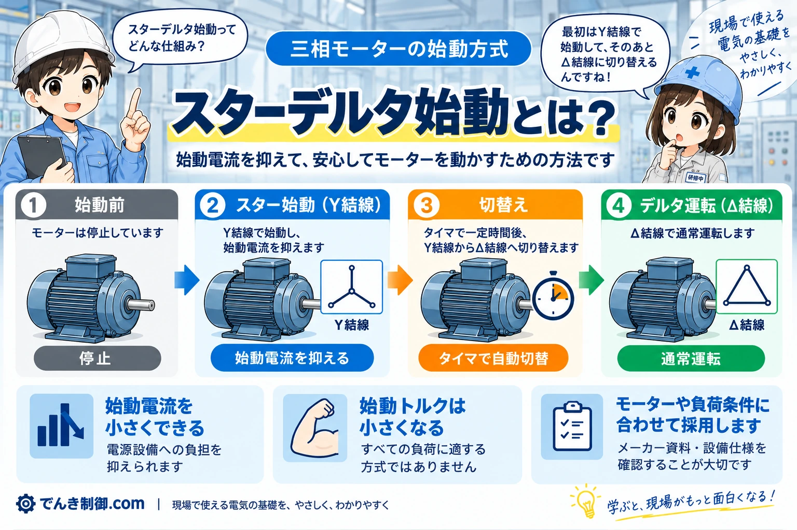
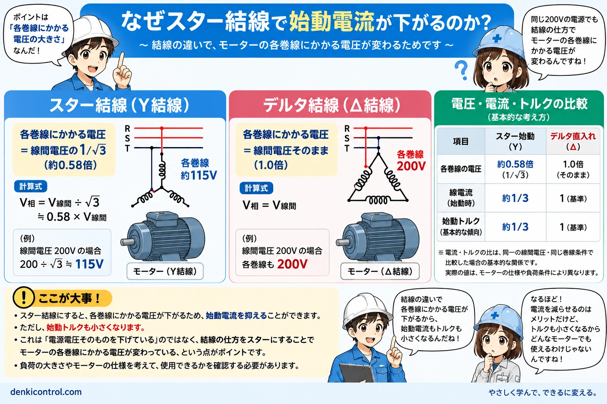
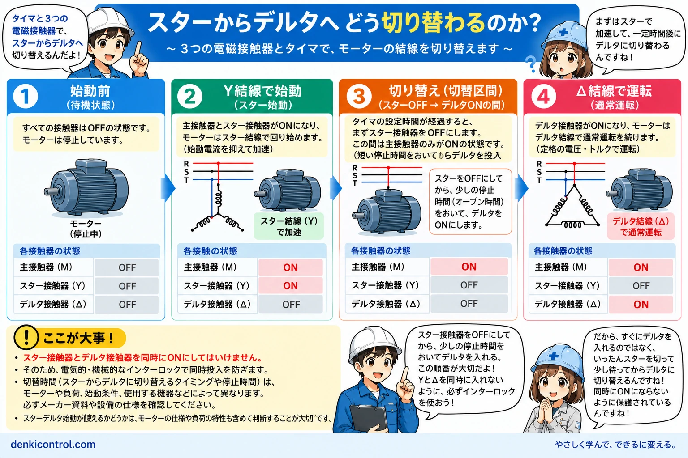
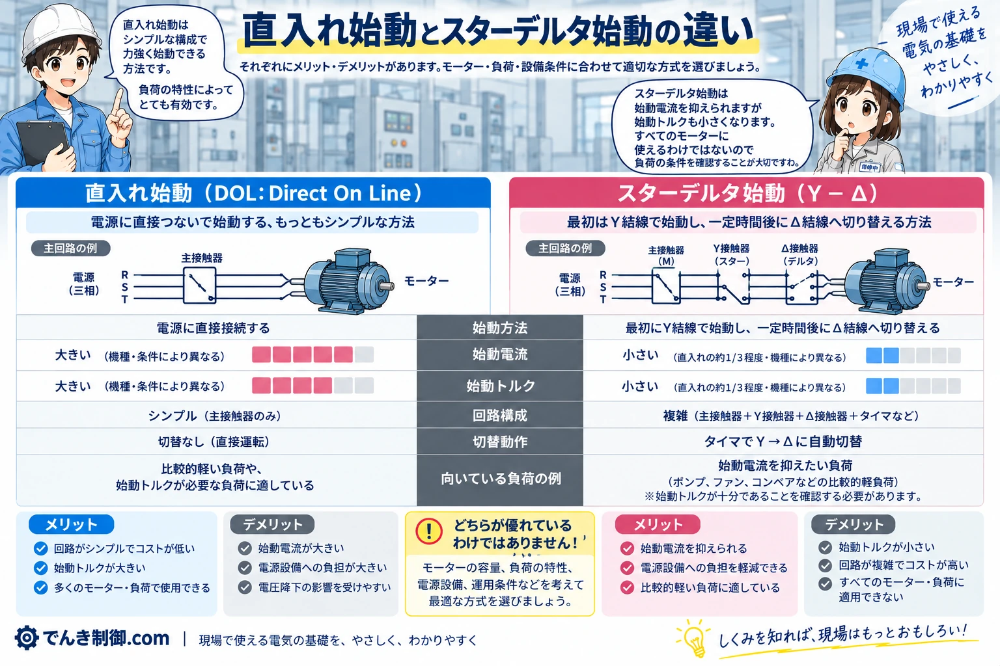
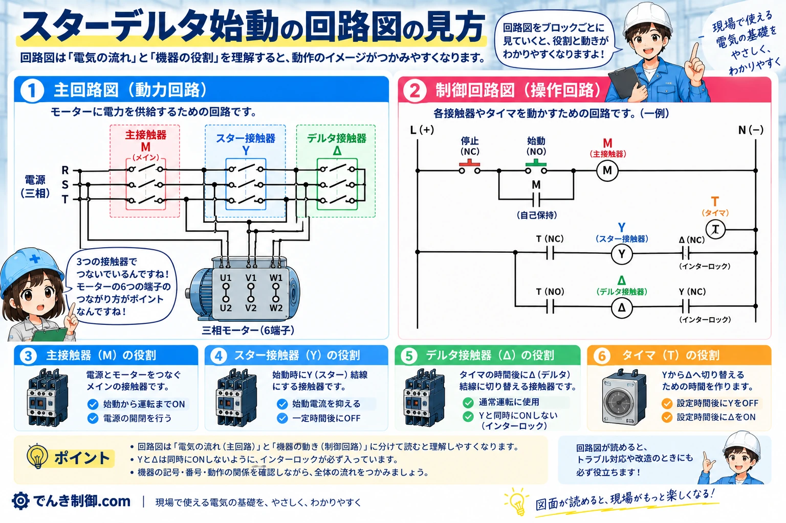
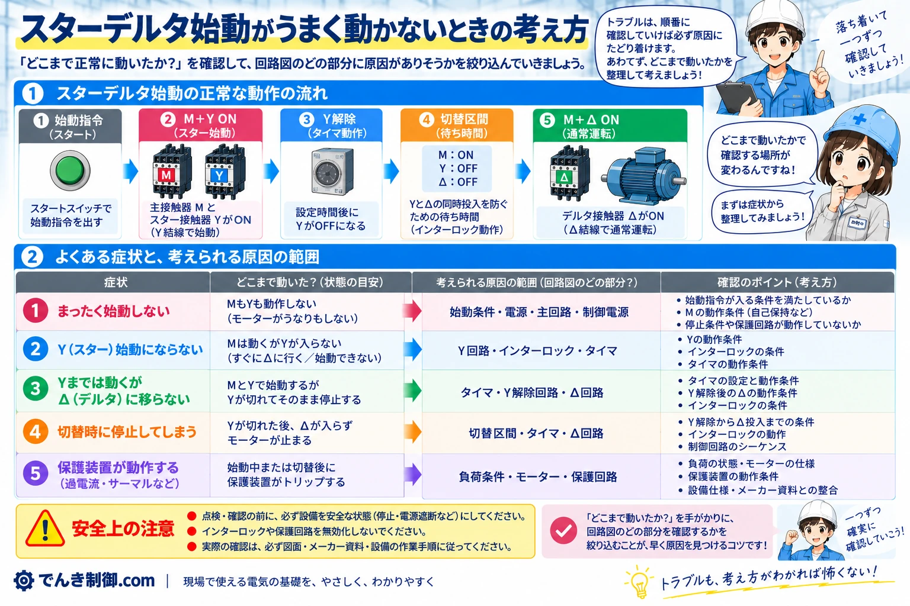

スターデルタ始動とは
スターデルタ始動は、三相誘導電動機を始動するときにスター結線（Y結線）を使って始動電流を抑え、回転が上がったあとにデルタ結線（Δ結線）へ切り替えて通常運転する始動方式です。
電流だけを都合よく小さくする方式ではない
スター始動では始動トルクも小さくなります。モーターが対応しているかだけでなく、スター始動中に負荷を十分に加速できるかも確認する必要があります。

なぜスター結線で始動電流が下がるのか
スター始動で変わるのは、電源の線間電圧そのものではなく、結線によって各巻線に加わる電圧です。Y結線では各巻線の電圧が線間電圧の 1/√3（約0.58倍）になります。
たとえば線間電圧が200Vなら、Y結線で各巻線に加わる電圧は約115Vです。一方、Δ結線では各巻線に線間電圧が加わります。「電源200Vが115Vになる」のではなく、電源は200Vのままで、巻線に加わる電圧が結線によって変わる点が重要です。

始動電流が約1/3になる考え方
電流の関係は、必要最低限に整理すると次のようになります。
YとΔの線電流の関係
Y：線電流 ＝ 相電流
Δ：線電流 ＝ √3 × 相電流
さらにY結線では巻線電圧が1/√3になります。このため、同じ線間電圧でΔ直入れ始動と比較する基本的な関係では、Y始動時の線電流は約1/3になります。
これは基本的・理想的な比較です。実機で必ず正確に1/3になるわけではなく、モーター特性、負荷、電源条件などによって実際の値は変わります。前節の図で、巻線電圧と線電流を分けて確認すると理解しやすくなります。
始動トルクも約1/3になる
誘導電動機のトルクは、基本的な考え方として印加電圧の2乗におおむね比例します。Y結線では巻線電圧が1/√3になるため、（1/√3）² ＝ 1/3となり、Δ直入れ始動との基本比較では始動トルクもおよそ1/3になります。
電流だけ小さくなるわけではない
始動時から大きなトルクが必要な負荷では、スター始動中に十分加速できない場合があります。

先輩電流だけ都合よく小さくなるわけじゃないんだ。スター始動では、始動トルクも小さくなるよ。

後輩だから、負荷が重い機械ならスターデルタにすればいい、とは限らないんですね！
スターからデルタへどう切り替わるのか
一般的なオープントランジション方式では、次の順番で切り替わります。
- 始動前：すべての接触器がOFF
- 主接触器Mとスター接触器YがON
- スター結線で始動
- モーターの回転が上昇
- スター接触器YがOFF
- 短い切替区間を設ける
- デルタ接触器ΔがON
- 主接触器Mとデルタ接触器Δで通常運転
YとΔは同時にONさせません。電気的・機械的インターロックで同時動作を防ぎ、タイマで切替タイミングを作る構成が一般的です。

どんなモーターにも使えるわけではない
スターデルタ始動は、すべての三相誘導電動機にそのまま使える始動方式ではありません。使用する電源電圧に対してデルタ結線で定格運転できることや、スターデルタ始動に必要な巻線端子を外部から扱える構成であることなど、モーター側の条件を確認する必要があります。
モーターが対応していても、始動時から大きなトルクを必要とする負荷では十分に加速できず、適さない場合があります。「三相モーターだから」「端子が6本あるから」だけで判断しないことが大切です。
- モーター銘板
- モーター結線図
- メーカー資料
- 設備仕様
- 負荷条件
先輩三相モーターなら全部スターデルタにできる、というわけじゃないよ。まずモーターの仕様を確認しよう。
後輩モーターだけじゃなくて、始動する負荷の重さも関係するんですね！
直入れ始動とスターデルタ始動の違い
どちらが常に優れているという関係ではありません。モーター、負荷、電源設備、始動条件、メーカー仕様などをもとに選定します。
| 項目 | 直入れ始動 | スターデルタ始動 |
|---|---|---|
| 始動方法 | 通常の結線で直接始動 | Yで始動してΔへ切替 |
| 始動電流 | 大きい | 基本比較では抑えられる |
| 始動トルク | 大きい | 基本比較では小さくなる |
| 回路構成 | 比較的シンプル | 接触器、タイマ、インターロックなどが必要 |
| 切替動作 | Y→Δ切替なし | Yを解除してからΔへ切替 |
| 適用条件 | 電源設備や始動条件を確認 | モーター仕様と負荷条件の確認が特に重要 |

回路図を見るときのポイント
施工や実配線の前に、まず回路の役割と動作順序を読み取ります。最初に主接触器M、スター接触器Y、デルタ接触器Δ、タイマTを探しましょう。
追う順序
M＋Y → Y解除 → 切替区間 → M＋Δ
特に確認したいのは、YとΔの同時動作を防止するインターロックです。実設備の回路には、さらに過負荷保護、停止回路、非常停止、安全回路、設備固有の条件などが含まれます。ここで示すのは読み方の基本であり、この図のとおりに配線するための施工手順ではありません。

タイマの時間は何秒にすればいい？
一律の正解秒数はありません
モーター特性、負荷、加速時間、スタータ／タイマ仕様、設備設計条件などによって適切な切替タイミングは変わります。
タイマは単に「何秒待つ装置」ではなく、スターからデルタへ適切に移行するタイミングを作るものです。早すぎると十分に加速する前に切り替わり、遅すぎると必要以上にスター状態が続くことがあります。
ネット上の設定例をそのまま設備に適用せず、メーカー資料、モーター／スタータ仕様、設備設計条件を優先してください。
後輩タイマは何秒にすればいいんですか？
先輩設備ごとに条件が違うから、一律には決められないよ。まずメーカー資料や設備仕様を確認しよう。
スターデルタ始動がうまく動かないときの考え方
実機の作業手順ではなく、どの段階まで正常に進んだかから原因の範囲を整理します。正常な流れは「始動指令 → Y始動 → Y解除 → 切替区間 → Δ運転」です。
| 症状 | 確認する範囲の考え方 |
|---|---|
| まったく始動しない | 始動条件、停止条件、保護回路、主接触器Mなど |
| Y始動にならない | Yの動作条件、インターロックなど |
| Yでは始動するがΔへ移らない | タイマ、Y解除、Δの動作条件、インターロックなど |
| 切替時に停止する | Y→Δの動作順序、切替条件、保護回路、負荷条件など |
| 保護装置が動作する | 負荷条件、始動状態、保護装置が動作した理由など |

安全機能を無効にして確認しない
原因確認のためにインターロックや保護回路を迂回したり、接触器を強制的に動作させたりしないでください。設備を安全な状態にし、電気図面、メーカー資料、設備の点検手順を優先します。
後輩動かないと、全部チェックしなきゃって思ってしまいます……。
先輩まず“どこまで正常に進んだか”を整理するといいよ。スターデルタは動作の順番が決まっているから、原因の範囲を考えやすくなるんだ。
スターデルタ始動の要点まとめ
スターデルタ始動は、始動時にY結線を使ってモーター各巻線に加わる電圧を下げ、始動電流を抑えたあと、Δ結線へ切り替えて通常運転する始動方式です。
基本的な比較では、始動線電流と始動トルクはそれぞれ約1/3です。ただし実際の値はモーター、負荷、電源条件などで変わります。始動電流を抑えられる代わりに始動トルクも小さくなるため、モーター仕様、負荷特性、電源設備、始動条件の確認が欠かせません。
この記事で覚えておきたい5点
- Y始動では各巻線の電圧が線間電圧の1/√3
- 始動線電流は基本比較で約1/3
- 始動トルクも基本比較で約1/3
- YとΔを同時に動作させない
- すべてのモーター・負荷に適する方式ではない
回路図では、M、Y、Δ、タイマ、インターロックを見つけ、動作順序から全体を把握しましょう。